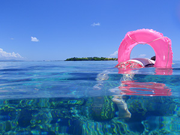
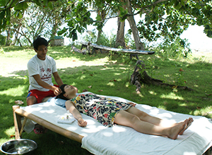
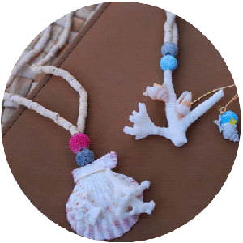
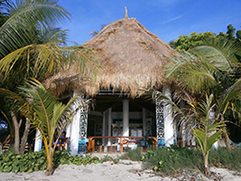
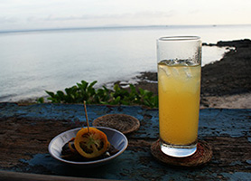

カオハガン島では様々なアクティビティを用意しています。
島にきたら絶対やりたい！海のアクティビティ

綺麗な海で泳いだり、釣りをしたり、珊瑚礁保護区でシュノーケリングもできます。
また、潮の引いた海で、島民におかず（貝やウニ、海草など）の採りかたを教えてもらうのも面白いですよ。
採った魚やウニは食べられます。
また、カヤックの貸し出しもありますよ。
大人気。癒しのマッサージ

島では２種類のマッサージをご用意しています。
・ひとつは、タイ式にカオハガン式が混ざったオリジナル全身マッサージ。
スタッフは７～８年以上経験を積んだベテランです。
・ふたつめは、島で作ったココナッツオイルを使った贅沢なオイルマッサージ。
風に吹かれながら、海辺で受けるリラクゼーショントリートメントは、心地よい眠りを誘います。
伝統的な技を体験。クラフトづくり

ロムロムという植物の葉を使った、コースターづくりや、椰子の葉を使ったほうきづくり、珊瑚のアクセサリーづくりなど、島民のスタッフとオリジナルのお土産づくりは、思い出になりますよ。
島にある特別な場所で…

・通称「Saki'sBar」と呼ばれる海沿いのバーで、夕日を見ながらゆったりとお酒を飲む贅沢な時間。
・２０１２年に新しくオープンした、アートカフェで島民とおしゃべり。
一番人気は採りたて椰子実からつくる、ココナッツミルクジュース。
・海岸にある、ドラム缶風呂で夕日を眺めながら、心も体も休まります。
島から少し足を伸ばして…
カオハガン島から、ボホールの朝市（交換の市）や、ボホール観光、セブ観光も可能です。
とっても美しい、秘密の島にもお連れできますよ。
他にも島には、楽しいことがたくさん待っています！
もちろん、島でのんびりと本を読んだり、ハンモックにゆられるのも、贅沢な過ごしかた。
島民と一緒にお酒を飲んだり、歌を歌ったりできるのも島の魅力です。